Çiğ köfte konsepti · 10 sürüm · 7 Kasım 2026
Aynı tepsi, on ayrı dünya
Kılavuz 05g'deki "acı / az acı" sahnesinin konsept çeşitlemeleri: farklı usta, ortam, tepsi, biber seti, replik, ses rengi ve ortam müziği. Görseller Grok (Cursor üzerinden) ile üretildi; sesler yerel Türkçe seslendirme ve filtre, müzikler kodla sentezlendi. Gerçek bir kişi taklit edilmez.
10 sürüm 12 biber 50 replik · 9 ses rengi 10 müzik döngüsü 52 görsel
Sürümler Karıştır Ustalar Tepsiler Ortamlar Biberler Ses · Müzik Tablo
On sürüm Her kartta: sahne görseli, usta · ortam · tepsi, malzeme seti, beş replik (tek tek dinle), müzik ve diyaloğu birlikte çalan "Sahneyi çal". Görsele dokununca büyür.
Ses telefonda ilk dokunuştan sonra açılır. Müzik ve diyalog aynı anda tek sahne çalar; başka bir sahneye basınca öncekini durdurur.
Klasik Urfa Dükkânı Taş dükkân, bakır tepsi, isot
🌶 Urfa isotu Orta, dumanlı 🎙 Derin, tok erkek sesi 🎵 Sıra gecesi: bağlama + darbuka
Usta Bıyıklı, kasketli, beyaz önlüklü orta yaşlı Urfalı usta; kolları sıvalı, eldivensiz, yüzük yok
Ortam Urfa çarşısında taş kemerli küçük çiğ köfte dükkânı; duvarda bakır siniler, tezgâhta isot kavanozları, dışarıda akşam ışığı
Tepsi Dövme bakır sini, kenarı kararmış, ortada koyu kırmızı köfte yığını
Malzemeler Urfa isotu (kurutulmuş, siyahımsı, yağlı) biber salçası nar ekşisi maydanoz taze soğan kimyon ince bulgur Replikler (izleyici adı yerine örnek: Deniz) ▶ ikonik Acı atayım mı abim benim?▶ bizim Hoş geldin Deniz , adını sininin kenarına yazdım.▶ bizim İsot Urfa'dan, nar ekşisi evden; Deniz acı dedi, bir kepçe daha.▶ ikonik Başımla beraber!▶ bizim Tepsi kıvama geldi, marul sarıyorum, bir dürüm bir ayran.
▶ Sahneyi çal müzik + diyalog
🎵 Yalnız müzik
🎙 Yalnız diyalog
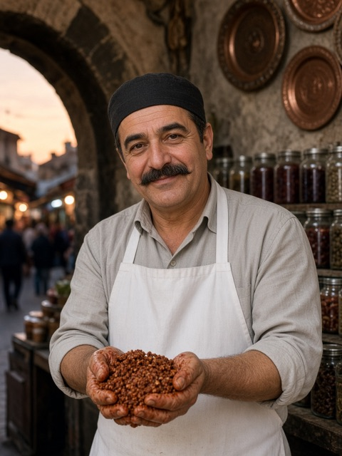
Usta 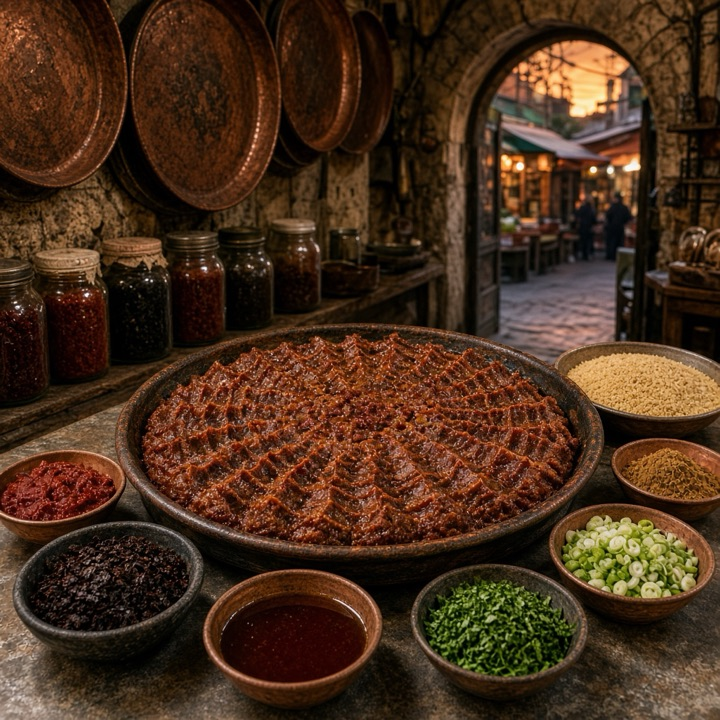
Tepsi 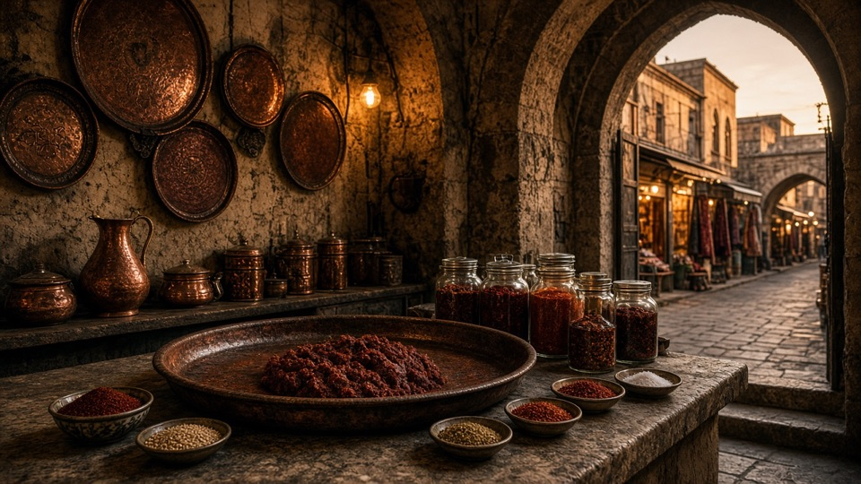
Ortam
Meksika Fiesta Tepsisi Jalapeño, habanero, misket limonu
🌶 Habanero + chipotle Yüksek, meyvemsi-dumanlı 🎙 Genç, parlak 🎵 Mariachi: trompet + gitar
Usta Genç, neşeli usta; önlüğün altında renkli ponço, bilekte örgü bileklik; başında sombrero yok, saçlar bandanalı
Ortam Mexico City tarzı renkli taco tezgâhı; kâğıt bayraklar (papel picado), kaktüs, sarı-pembe duvar
Tepsi El boyaması Talavera seramik büyük tabak, mavi-sarı desenli
Malzemeler jalapeño dilimleri habanero (turuncu, çok acı) chipotle tozu (tütsülenmiş) misket limonu kişniş avokado mısır cipsi Replikler (izleyici adı yerine örnek: Deniz) ▶ bizim Hola Deniz ! Bugün tepsi Meksika'ya gidiyor.▶ bizim Habanero mu dedin Deniz ? Cesursun, bir dilim ekliyorum.▶ bizim Chipotle tüttü, misket limonu sıkıldı; Deniz tepsinin kenarında.▶ bizim Fiesta turu! Mısır cipsiyle sıkma zamanı.▶ bizim Deniz , acı 9'da; su değil, ayran getirin!
▶ Sahneyi çal müzik + diyalog
🎵 Yalnız müzik
🎙 Yalnız diyalog
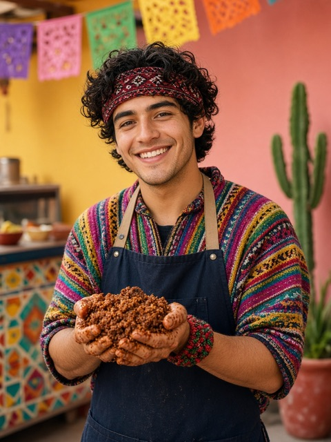
Usta 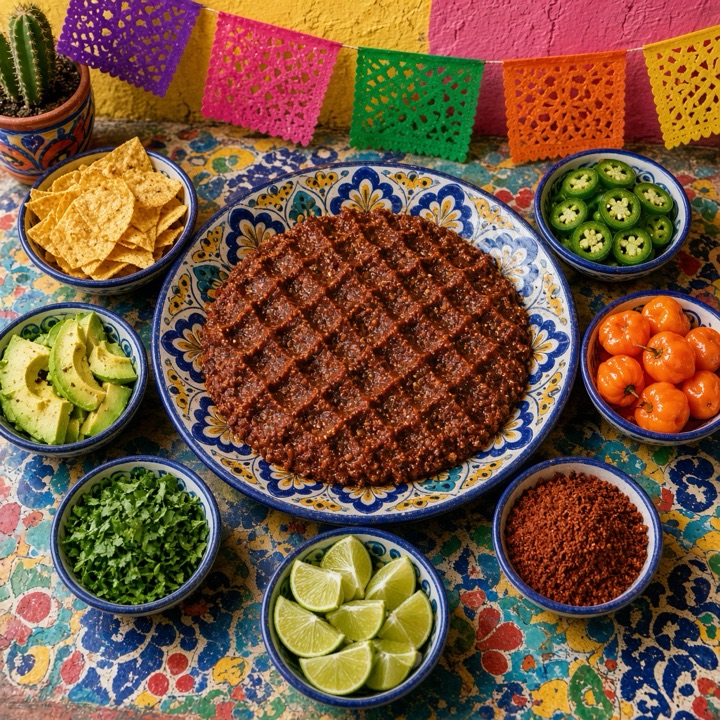
Tepsi 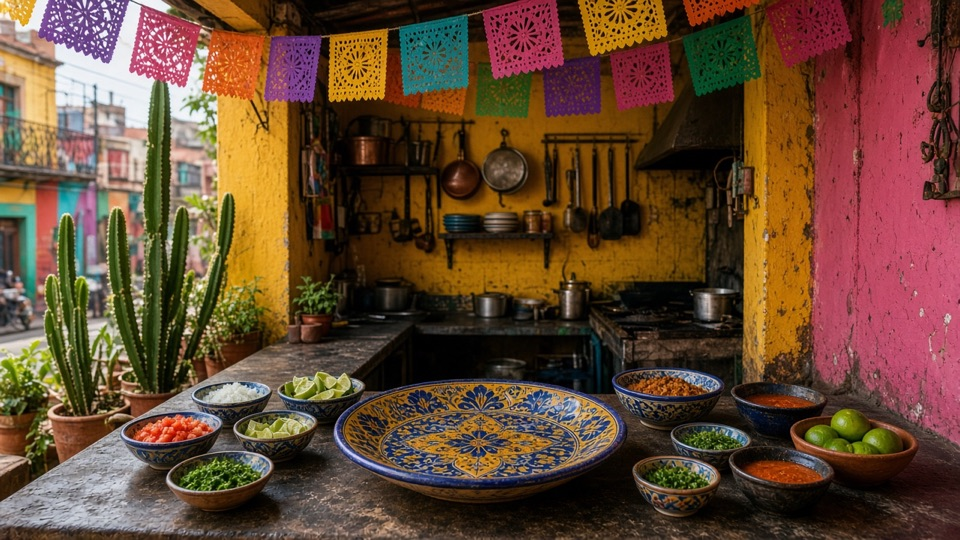
Ortam
Seul Isı Kapısı Gochugaru, gochujang, kimchi
🌶 Gochugaru + gochujang Orta-yüksek, tatlımsı 🎙 Hızlı, enerjik 🎵 K-pop elektro: 128 bpm
Usta Genç, kısa saçlı, siyah şef ceketli usta; eldiven siyah, kolunda küçük dövme yok; ciddi ama gülümser
Ortam Seul gece sokağı; neon tabelalar, buharlı tezgâh, yağmurdan ıslak kaldırım yansımaları
Tepsi Siyah volkanik taş kare tabak, kenarda küçük kimchi kâseleri
Malzemeler gochugaru (Kore pul biberi) gochujang (fermente biber ezmesi) kimchi susam yağı taze soğan susam Replikler (izleyici adı yerine örnek: Deniz) ▶ bizim Annyeong Deniz ! Tepsiye gochujang giriyor.▶ bizim Deniz acı dedi; gochugaru bir kaşık, tempo yukarı.▶ bizim Kimchi geldi, tepsi fermente oldu; Deniz listede.▶ bizim Isı kapısı açıldı: 10 beğeni, bir kaşık daha.▶ bizim Susamla kapatıyoruz, sıkma turu başlıyor.
▶ Sahneyi çal müzik + diyalog
🎵 Yalnız müzik
🎙 Yalnız diyalog
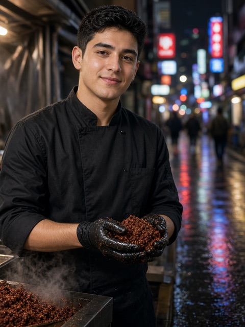
Usta 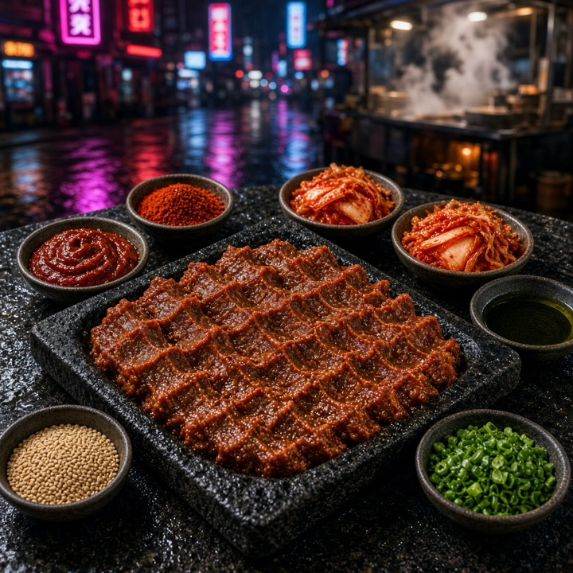
Tepsi 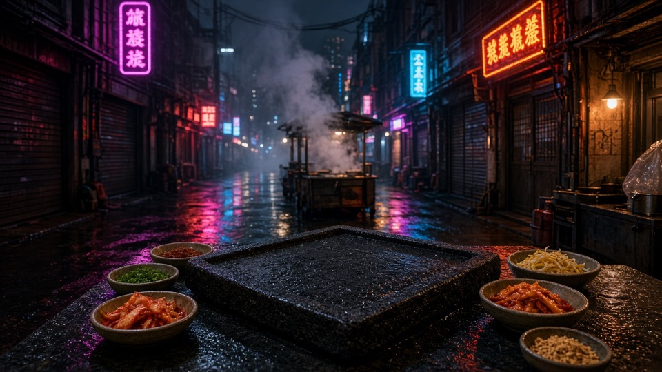
Ortam
Baharat Pazarı Ocağı Bhut jolokia, garam masala, bronz thali
🌶 Bhut jolokia Çok yüksek, tütsülü 🎙 Sakin, yankılı 🎵 Tabla + tanpura
Usta Sakallı, güler yüzlü, safran rengi önlüklü usta; bileğinde ip, elinde ahşap kaşık
Ortam Hindistan baharat pazarı; renkli baharat tepeleri, bakır kaplar, sarı tente altı
Tepsi Bronz thali (yuvarlak, bölmeli), çevresinde küçük baharat kâseleri
Malzemeler bhut jolokia (hayalet biber) garam masala zerdeçal kişniş tohumu taze nane yoğurt Replikler (izleyici adı yerine örnek: Deniz) ▶ bizim Namaste Deniz , baharat tezgâhına hoş geldin.▶ bizim Hayalet biber tek tutam, Deniz ; fazlası tepsiyi yakar.▶ bizim Garam masala kokusu geldi mi? Deniz acı dedi, zerdeçal yanında.▶ bizim Nane yoğurt yanında; acı 10 olunca o kurtarır.▶ bizim Tepsi hazır, thali dönüyor, sıkma başlıyor.
▶ Sahneyi çal müzik + diyalog
🎵 Yalnız müzik
🎙 Yalnız diyalog
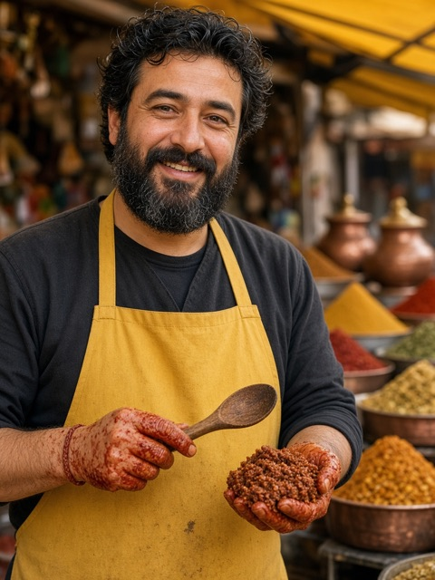
Usta 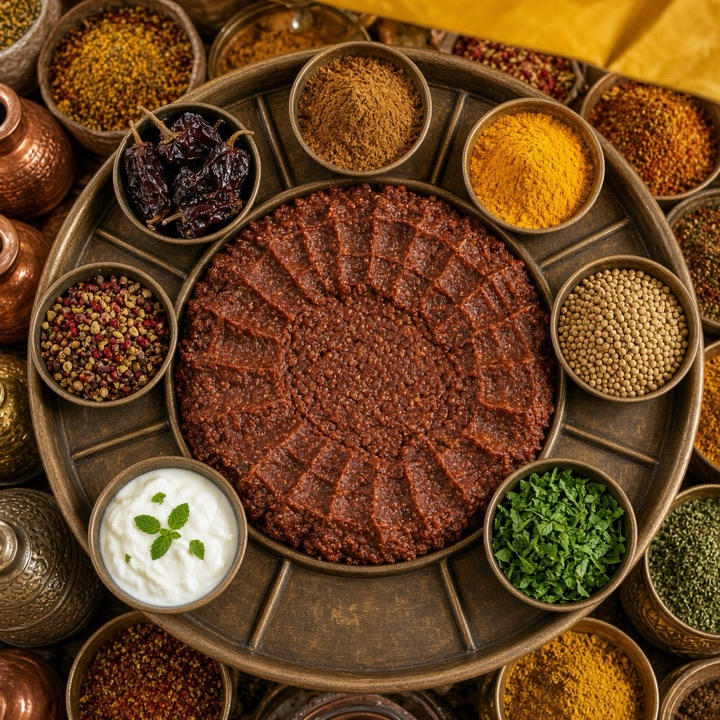
Tepsi 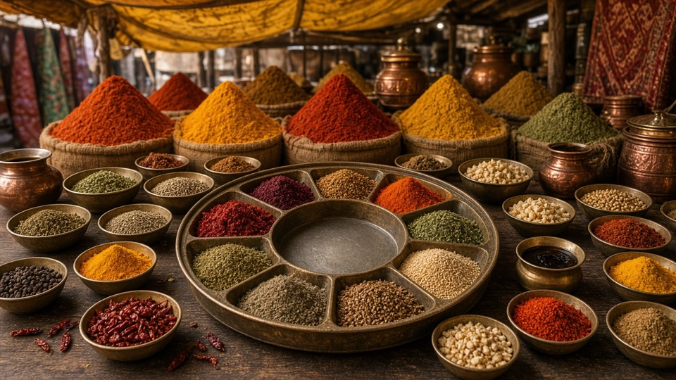
Ortam
Reaper Meydan Okuması Carolina Reaper, laboratuvar eldiveni
🌶 Carolina Reaper Aşırı; yalnız gösteri 🎙 Gergin, sıkıştırılmış 🎵 Trap gerilim: 808 + hi-hat
Usta Koruyucu gözlüklü, siyah lastik eldivenli, siyah tişörtlü usta; ter damlaları, meydan okuyan bakış
Ortam Garaj stüdyo; kırmızı LED şerit ışık, duvarda Scoville ölçeği tablosu, masada süt şişeleri
Tepsi Paslanmaz çelik derin tepsi, kenarda uyarı bandı
Malzemeler Carolina Reaper (1,6 milyon SHU) habanero süt dondurma ekmek Replikler (izleyici adı yerine örnek: Deniz) ▶ bizim Deniz geldi, kayıt başlıyor; süt masada.▶ bizim Reaper bir tane, bıçak keskin; Deniz 'at' dedi.▶ bizim Acı ölçer 9,5; Deniz , buradan sonrası gösteri.▶ bizim Bu tepsi yenmez, bu tepsi izlenir.▶ bizim Su yok, süt var; dondurma turu açıldı.
▶ Sahneyi çal müzik + diyalog
🎵 Yalnız müzik
🎙 Yalnız diyalog
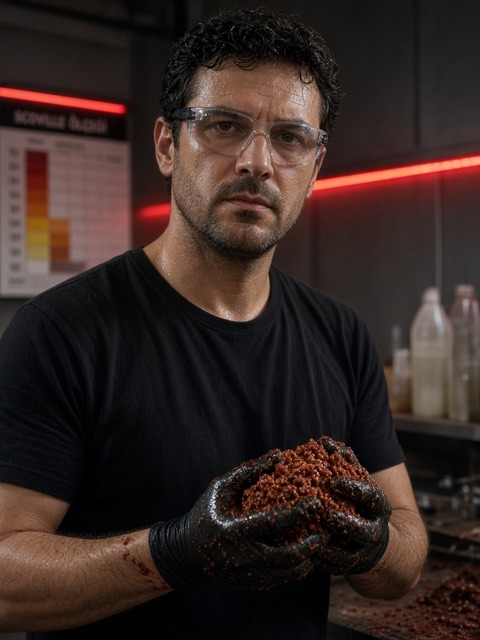
Usta 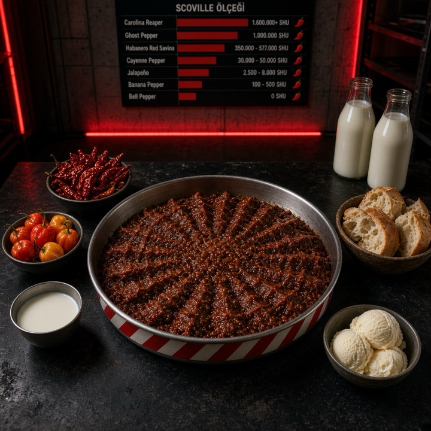
Tepsi 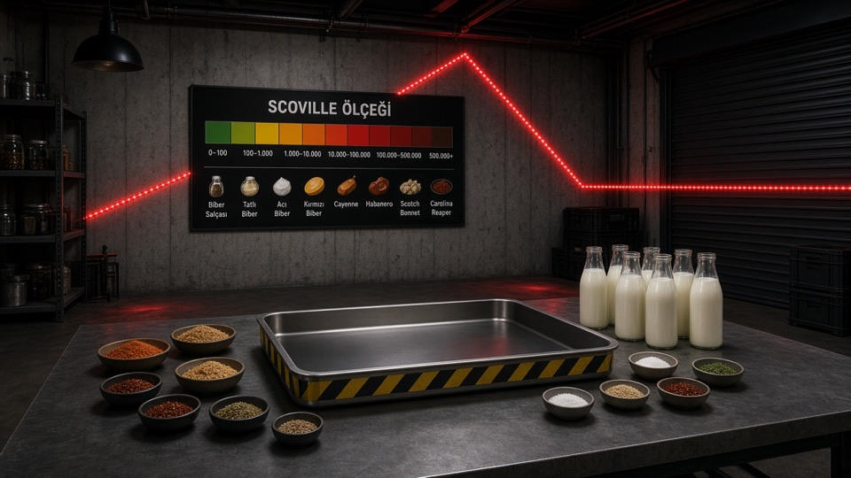
Ortam
Harran Akşamı Kerpiç ev, tandır, bakır sini
🌶 Ev isotu Hafif, kokulu 🎙 Yaşlı, yavaş, boğuk 🎵 Ney + cırcır böceği
Usta Yaşlı, ak sakallı, nazik dede; başında puşi, elleri kırışık ve sakin
Ortam Harran kerpiç kubbeli ev avlusu; tandır közü, kerosen lamba, akşam mor gökyüzü
Tepsi Eski geniş bakır sini, yer sofrasında, etrafında minderler
Malzemeler isot (ev kurutması) taze nane sumak yeşil soğan köy bulguru sade yağ yok, yalnız salça Replikler (izleyici adı yerine örnek: Deniz) ▶ bizim Gel Deniz , otur şuraya, sini büyük.▶ bizim Acıyı az koyarım, kokusunu çok; Deniz öyle ister.▶ bizim Nane bizim bahçeden, sumak komşudan.▶ bizim Acele yok; kıvam gelince söylerim.▶ bizim Hadi, bir lokma Deniz 'a, bir lokma bana.
▶ Sahneyi çal müzik + diyalog
🎵 Yalnız müzik
🎙 Yalnız diyalog
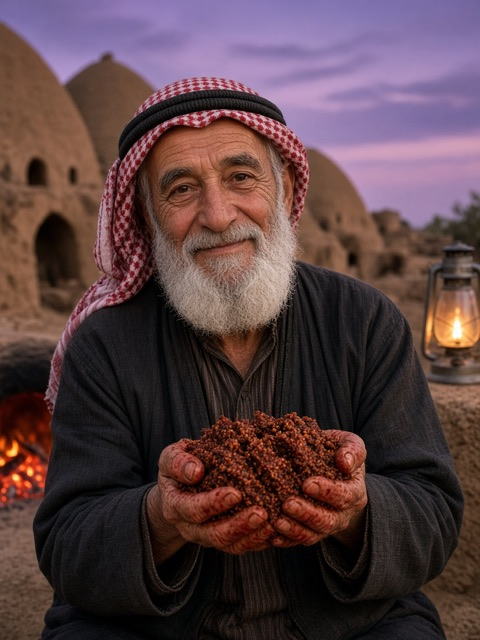
Usta 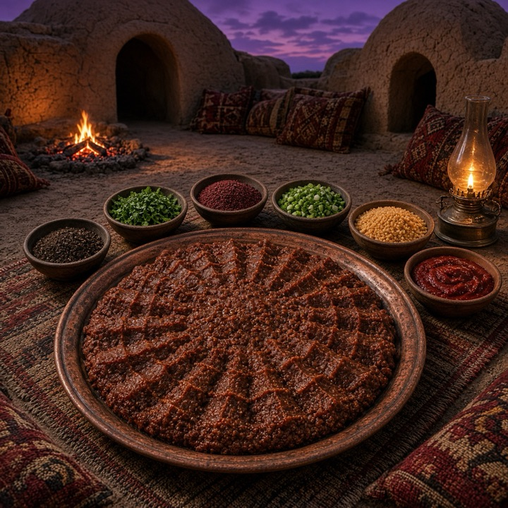
Tepsi 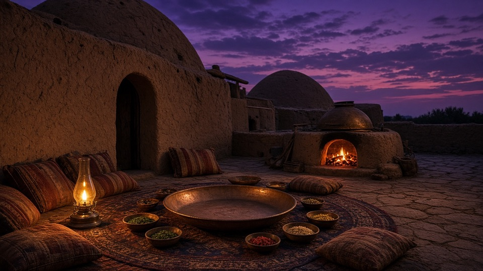
Ortam
Sahil Yazlığı Hasır tabla, limon, bol marul
🌶 Az isot Düşük, ekşi-ferah 🎙 Rahat, yankılı 🎵 Reggae-chill + dalga
Usta Genç, bronz tenli, keten gömlekli usta; gözlük alnında, ayaklar çıplak kumda
Ortam Ege sahili gün batımı; ahşap iskele, hasır şemsiye, arkada tekneler
Tepsi Hasır tabla üstünde geniş seramik tabak, kenarında limon dilimleri
Malzemeler taze limon nar ekşisi bol marul roka az isot zeytinyağı Replikler (izleyici adı yerine örnek: Deniz) ▶ bizim Selam Deniz , güneş batıyor, tepsi serin.▶ bizim Limon bol, isot az; Deniz 'az acı' dedi, tam yerinde.▶ bizim Marul sardım, nar ekşisi damladı, Deniz iskelede.▶ bizim Dalga sesine karşı yoğuruyoruz, acele yok.▶ bizim Roka turu: on beğeni, bir avuç roka.
▶ Sahneyi çal müzik + diyalog
🎵 Yalnız müzik
🎙 Yalnız diyalog
Usta 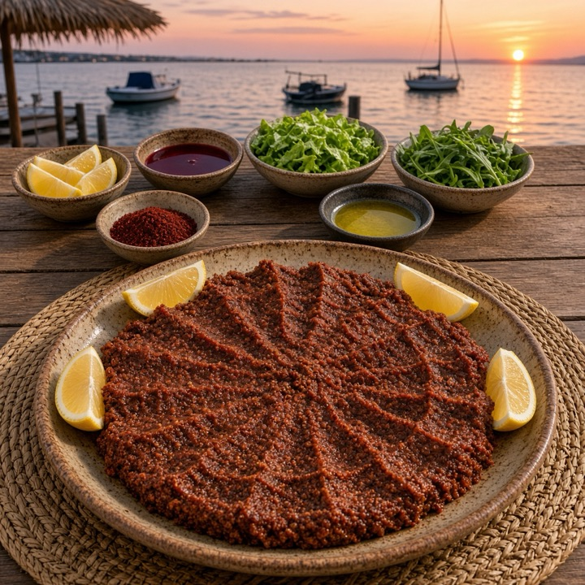
Tepsi 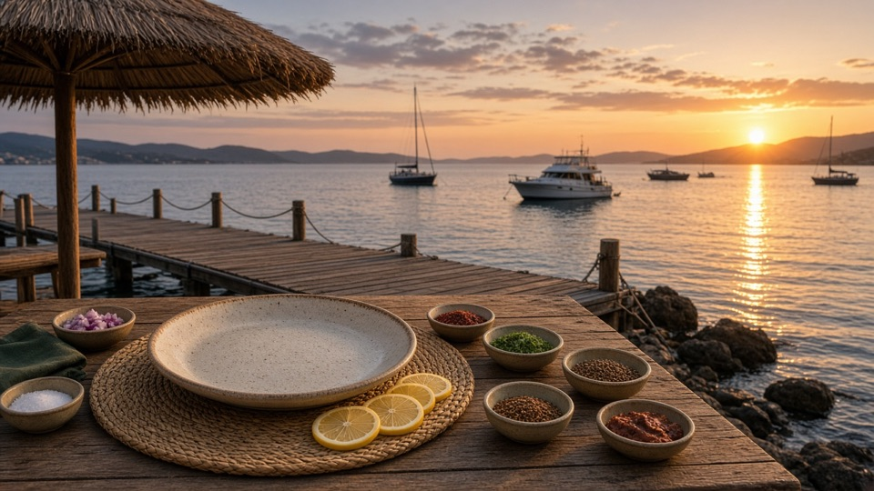
Ortam
Gece Vardiyası Taksi Tepsisi Araç içi tepsi, Maraş biberi, neon
🌶 Maraş pul biberi Orta, keskin 🎙 Derin, tok erkek sesi 🎵 Arabesk synth yaylılar
Usta Orta yaşlı, deri ceketli, tesbihli şoför-usta; direksiyonun yanında küçük tepsi
Ortam İstanbul gece; taksi içi, torpidoda tepsi, camlarda neon yansımaları ve yağmur
Tepsi Küçük yuvarlak çelik tepsi, torpido üstünde kaymaz altlıkla
Malzemeler Maraş biberi salça nar ekşisi tursu lavaş ayran kutusu Replikler (izleyici adı yerine örnek: Deniz) ▶ bizim Nereye Deniz ? Tepsi arka koltukta.▶ bizim Maraş biberi kırmızı ışıkta atılır, yeşilde yoğrulur.▶ bizim Deniz acı dedi, taksimetre acıyı yazdı.▶ bizim Yağmur başladı, lavaş hazır, dürüm sırada.▶ bizim Bu durakta iniş yok, bir sıkma daha.
▶ Sahneyi çal müzik + diyalog
🎵 Yalnız müzik
🎙 Yalnız diyalog
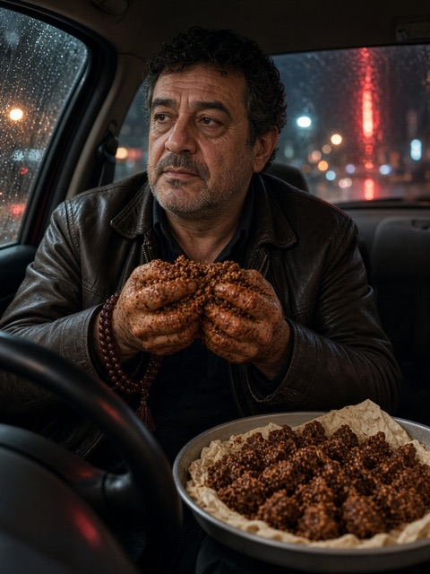
Usta 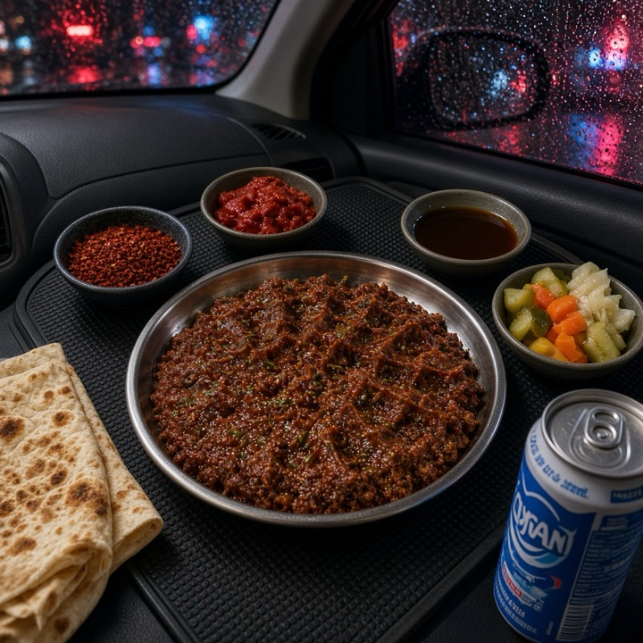
Tepsi 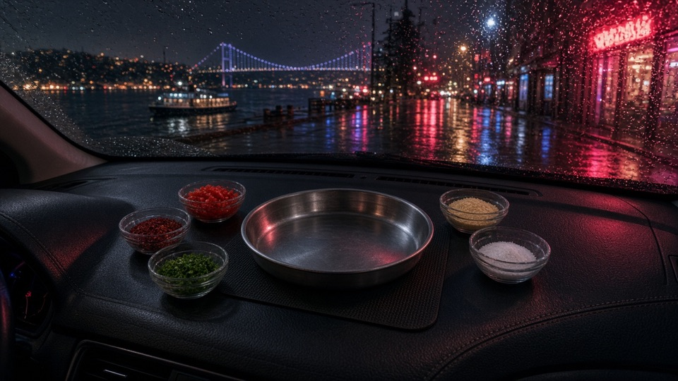
Ortam
Yörünge Mutfağı Yerçekimsiz isot, astronot usta
🌶 İsot tozu Orta, kuru 🎙 Telsiz filtreli 🎵 Ambient synth pad
Usta Beyaz uzay tulumlu, kaskı açık, genç ve şaşkın gülümseyen usta
Ortam Uzay istasyonu modülü; pencereden Dünya, havada süzülen isot taneleri ve bulgur
Tepsi Mıknatıslı metal tepsi, kenarları yüksek, köfte filelerle tutulmuş
Malzemeler isot tozu (kapsülde) dondurulmuş kurutulmuş nar ekşisi tüp salça vakumlu bulgur su torbası Replikler (izleyici adı yerine örnek: Deniz) ▶ bizim Houston, Deniz modüle bağlandı.▶ bizim İsot serbest düşüşte; Deniz 'acı' dedi, kapsül açıldı.▶ bizim Bulgur süzülüyor, file kapat, yoğurmaya devam.▶ bizim Yerçekimi yok, iştah var.▶ bizim Yörünge turu tamam, sıkma için manyetik tepsi kilitli.
▶ Sahneyi çal müzik + diyalog
🎵 Yalnız müzik
🎙 Yalnız diyalog
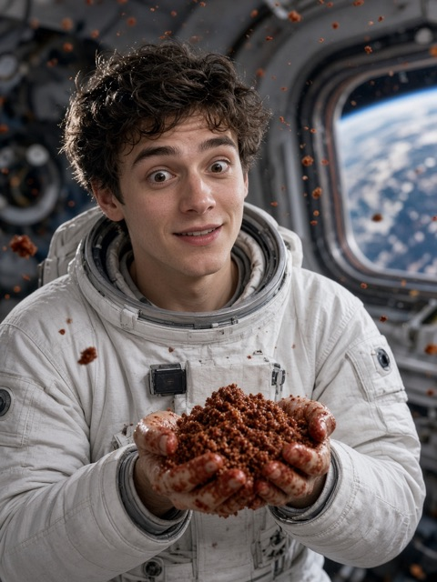
Usta 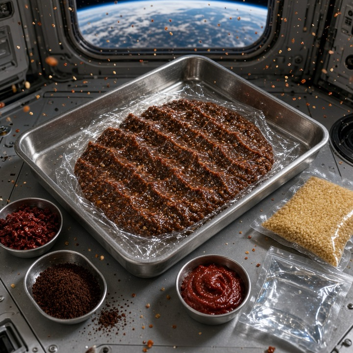
Tepsi 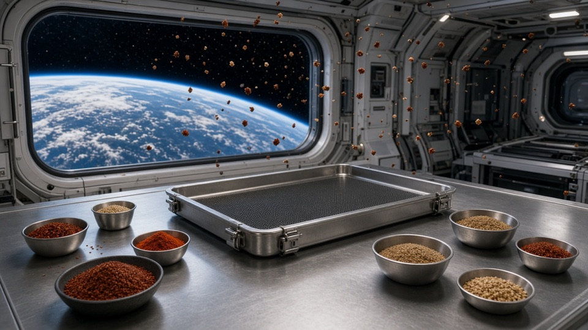
Ortam
Avlu Anne Tarifi Emaye tepsi, ceviz, asma gölgesi
🌶 İsot + salça Orta, cevizli-tatlı 🎙 Sıcak kadın sesi 🎵 Bağlama türkü + def
Usta Başı tülbentli, güler yüzlü, elli yaşlarında Urfalı kadın usta; önlük çiçekli, kolları sıvalı
Ortam Taş avlu; asma gölgesi, duvarda kurutulmuş biber dizileri, ortada tahta masa
Tepsi Beyaz emaye tepsi, kenarı mavi, üzerinde yoğrulmuş köfte
Malzemeler isot biber salçası dövülmüş ceviz maydanoz sarımsak kimyon nar ekşisi Replikler (izleyici adı yerine örnek: Deniz) ▶ bizim Hoş geldin Deniz evladım, ellerini yıka gel.▶ bizim Ceviz anamın tarifi; acıyı Deniz kadar koyarım.▶ bizim Salçayı avuçla, isotu tutamla; öğren bak.▶ bizim Asma gölgesi serin, tepsi sıcak, sabır kıvam getirir.▶ bizim Al Deniz , ilk sıkma senin.
▶ Sahneyi çal müzik + diyalog
🎵 Yalnız müzik
🎙 Yalnız diyalog
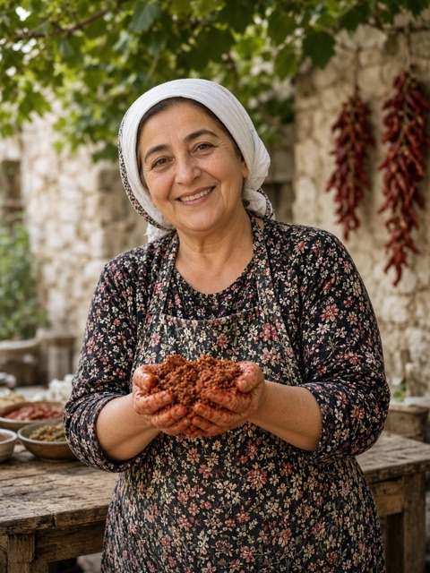
Usta 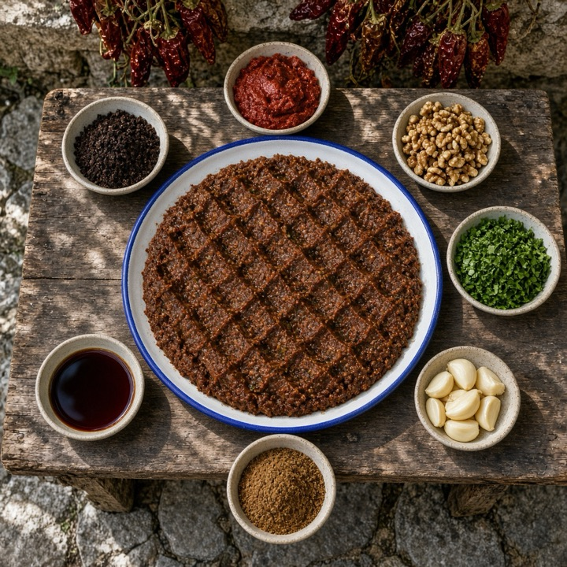
Tepsi 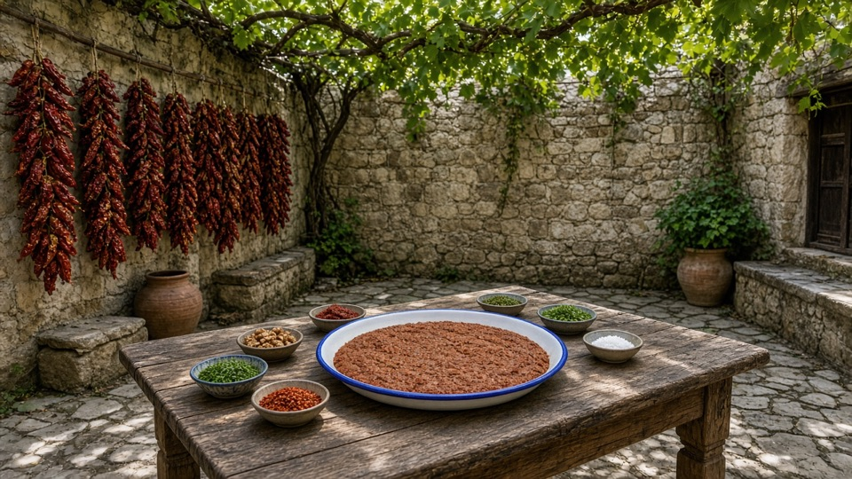
Ortam
Karıştır: kendi sürümünü kur Usta, tepsi, ortam, replik takımı, ses rengi ve müziği ayrı ayrı seç; sahneyi çal.
UstaKlasik Urfa Dükkânı Meksika Fiesta Tepsisi Seul Isı Kapısı Baharat Pazarı Ocağı Reaper Meydan Okuması Harran Akşamı Sahil Yazlığı Gece Vardiyası Taksi Tepsisi Yörünge Mutfağı Avlu Anne Tarifi
TepsiKlasik Urfa Dükkânı Meksika Fiesta Tepsisi Seul Isı Kapısı Baharat Pazarı Ocağı Reaper Meydan Okuması Harran Akşamı Sahil Yazlığı Gece Vardiyası Taksi Tepsisi Yörünge Mutfağı Avlu Anne Tarifi
OrtamKlasik Urfa Dükkânı Meksika Fiesta Tepsisi Seul Isı Kapısı Baharat Pazarı Ocağı Reaper Meydan Okuması Harran Akşamı Sahil Yazlığı Gece Vardiyası Taksi Tepsisi Yörünge Mutfağı Avlu Anne Tarifi
Replik + sesKlasik Urfa Dükkânı Meksika Fiesta Tepsisi Seul Isı Kapısı Baharat Pazarı Ocağı Reaper Meydan Okuması Harran Akşamı Sahil Yazlığı Gece Vardiyası Taksi Tepsisi Yörünge Mutfağı Avlu Anne Tarifi
MüzikKlasik Urfa Dükkânı Meksika Fiesta Tepsisi Seul Isı Kapısı Baharat Pazarı Ocağı Reaper Meydan Okuması Harran Akşamı Sahil Yazlığı Gece Vardiyası Taksi Tepsisi Yörünge Mutfağı Avlu Anne Tarifi
▶ Karışımı çal seçili müzik + diyalog 🎲 Rastgele
Ustalar On karakter; hepsi genel tip, gerçek kişi yok.
Klasik Urfa Dükkânı Meksika Fiesta Tepsisi Seul Isı Kapısı Baharat Pazarı Ocağı Reaper Meydan Okuması Harran Akşamı Sahil Yazlığı Gece Vardiyası Taksi Tepsisi Yörünge Mutfağı Avlu Anne Tarifi
Tepsiler ve sunum Bakır sini, Talavera seramik, volkanik taş, bronz thali, çelik, hasır tabla, emaye…
Klasik Urfa Dükkânı Meksika Fiesta Tepsisi Seul Isı Kapısı Baharat Pazarı Ocağı Reaper Meydan Okuması Harran Akşamı Sahil Yazlığı Gece Vardiyası Taksi Tepsisi Yörünge Mutfağı Avlu Anne Tarifi
Ortamlar Yayının açılacağı mekân; tepsi boş, izleyici gelince dolacak.
Klasik Urfa Dükkânı Meksika Fiesta Tepsisi Seul Isı Kapısı Baharat Pazarı Ocağı Reaper Meydan Okuması Harran Akşamı Sahil Yazlığı Gece Vardiyası Taksi Tepsisi Yörünge Mutfağı Avlu Anne Tarifi
Biber kütüphanesi Yalnız isot değil: 12 biber ve ezme, acılık (Scoville) ve tepsiye ne kattığı. SHU değerleri yaklaşık aralıklardır.
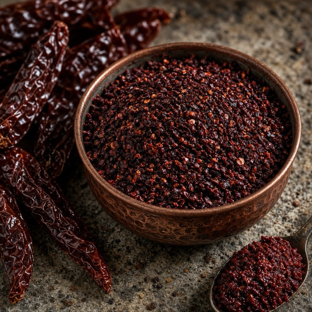
Urfa isotu Şanlıurfa 30–50 bin SHU
Güneşte kurutulup gece örtülerek kararır; dumanlı, hafif ekşi, yağlı. Çiğ köftenin omurgası.
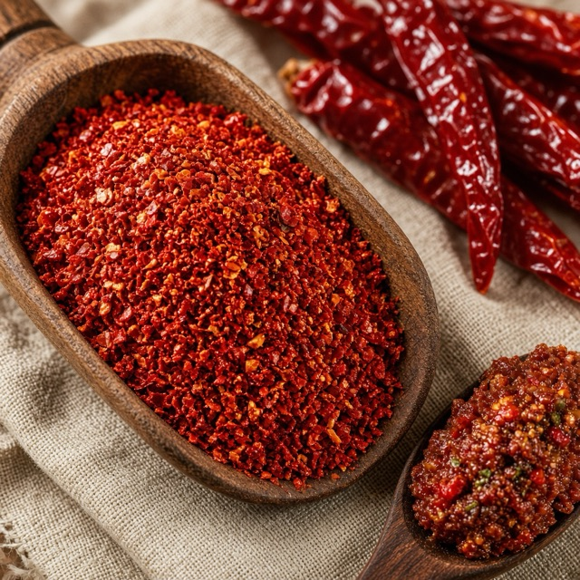
Maraş pul biberi Kahramanmaraş 10–30 bin SHU
Parlak kırmızı, tuzlu-yağlı; keskin, çabuk gelen acı.
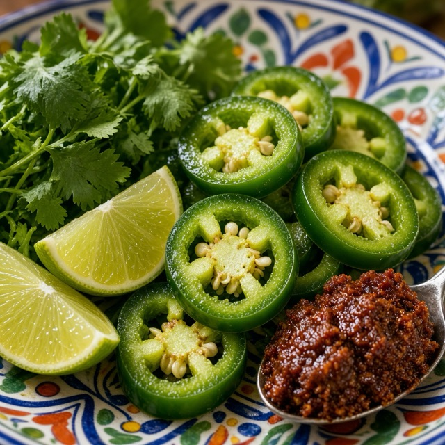
Jalapeño Meksika 2,5–8 bin SHU
Yeşil, sulu, çıtır; dilim dilim tepsiye. Hafif acı, çimenimsi.
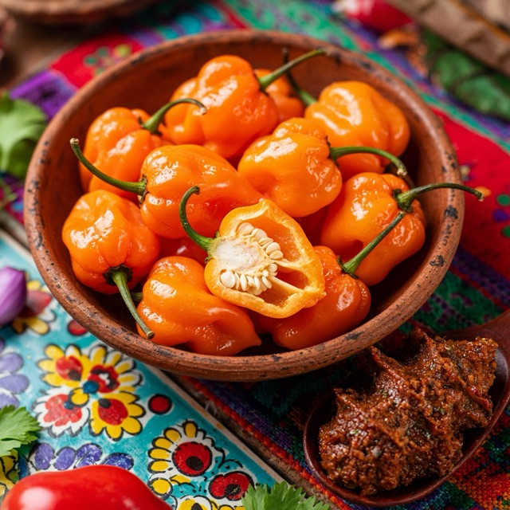
Habanero Yucatán 100–350 bin SHU
Turuncu fener biçimli, meyvemsi; bir tanesi tepsiyi değiştirir.
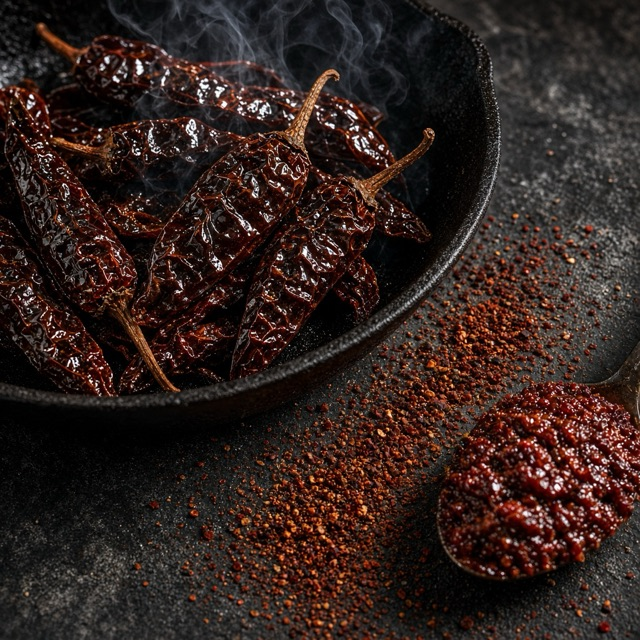
Chipotle Meksika 5–10 bin SHU
Tütsülenmiş kurutulmuş jalapeño; is kokusu isotla kardeş.
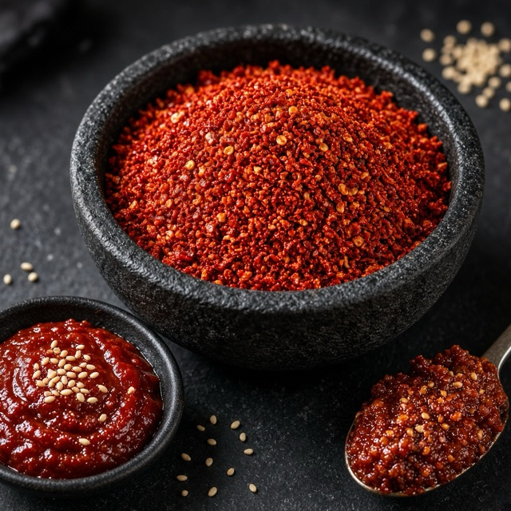
Gochugaru Kore 1,5–10 bin SHU
Kaba, parlak kırmızı, tatlımsı; gochujang ile fermente derinlik.
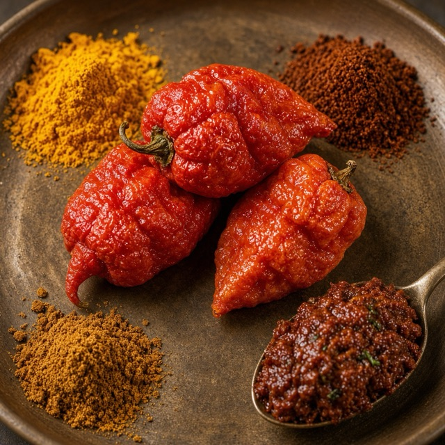
Bhut jolokia (hayalet biber) Assam, Hindistan ≈1 milyon SHU
Yavaş başlar, uzun sürer; bir tutam yeter.
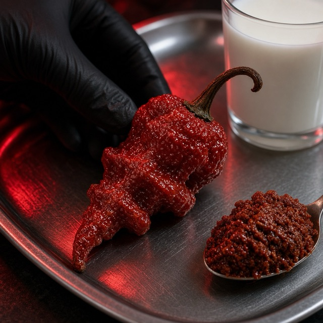
Carolina Reaper ABD ≈1,6 milyon SHU
Kuyruklu, buruşuk; yalnız meydan okuma gösterisi için; yanında süt.
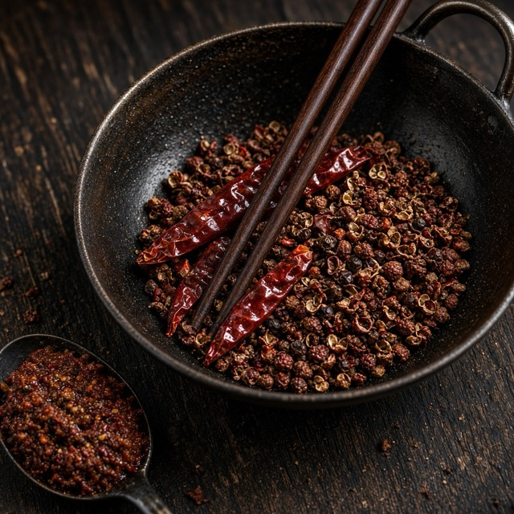
Sichuan biberi Çin acı değil, uyuşturur SHU
Dil uyuşması (málà); isotla birlikte 'uyuşturan acı' tepsi.
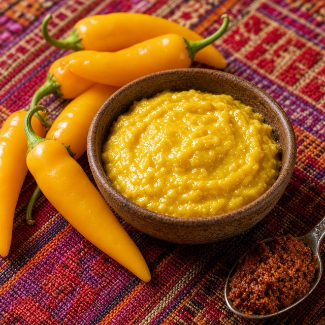
Ají amarillo Peru 30–50 bin SHU
Sarı-turuncu, meyvemsi; nar ekşisiyle şaşırtıcı uyum.
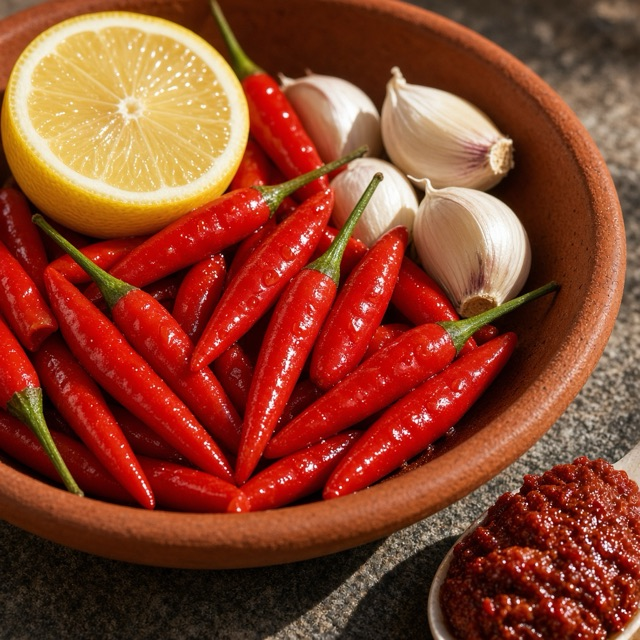
Peri peri Mozambik / Portekiz 50–175 bin SHU
Küçük, parlak, limonlu-sarımsaklı sosla.
Harissa Tunus 5–20 bin (ezme) SHU
Kimyon, kişniş, sarımsaklı kırmızı ezme; salçanın yerine denenebilir.
Ses renkleri ve müzikler Dokuz ses profili (tek yerel sesin perde, hız ve filtre çeşitlemeleri) ve on müzik döngüsü (24 sn, döngüde çalar).
Ses renkleri ▶ Derin, tok erkek sesi · Klasik Urfa Dükkânı ▶ Genç, parlak · Meksika Fiesta Tepsisi ▶ Hızlı, enerjik · Seul Isı Kapısı ▶ Sakin, yankılı · Baharat Pazarı Ocağı ▶ Gergin, sıkıştırılmış · Reaper Meydan Okuması ▶ Yaşlı, yavaş, boğuk · Harran Akşamı ▶ Rahat, yankılı · Sahil Yazlığı ▶ Derin, tok erkek sesi · Gece Vardiyası Taksi Tepsisi ▶ Telsiz filtreli · Yörünge Mutfağı ▶ Sıcak kadın sesi · Avlu Anne Tarifi Müzikler ▶ Sıra gecesi: bağlama + darbuka · Klasik Urfa Dükkânı ▶ Mariachi: trompet + gitar · Meksika Fiesta Tepsisi ▶ K-pop elektro: 128 bpm · Seul Isı Kapısı ▶ Tabla + tanpura · Baharat Pazarı Ocağı ▶ Trap gerilim: 808 + hi-hat · Reaper Meydan Okuması ▶ Ney + cırcır böceği · Harran Akşamı ▶ Reggae-chill + dalga · Sahil Yazlığı ▶ Arabesk synth yaylılar · Gece Vardiyası Taksi Tepsisi ▶ Ambient synth pad · Yörünge Mutfağı ▶ Bağlama türkü + def · Avlu Anne Tarifi Gerçek yayında: müzik telifsiz/kendi üretim olmalı (bu döngüler bizim); ses için ElevenLabs ya da Piper (yerel) ile farklı karakter sesleri üretilebilir. Yüz ve ses taklidi yok.
Karşılaştırma # Sürüm Biber Sıcaklık Ses Müzik Tepsi 01 Klasik Urfa Dükkânı Urfa isotu Orta, dumanlı Derin, tok erkek sesi Sıra gecesi: bağlama + darbuka Dövme bakır sini 02 Meksika Fiesta Tepsisi Habanero + chipotle Yüksek, meyvemsi-dumanlı Genç, parlak Mariachi: trompet + gitar El boyaması Talavera seramik büyük tabak 03 Seul Isı Kapısı Gochugaru + gochujang Orta-yüksek, tatlımsı Hızlı, enerjik K-pop elektro: 128 bpm Siyah volkanik taş kare tabak 04 Baharat Pazarı Ocağı Bhut jolokia Çok yüksek, tütsülü Sakin, yankılı Tabla + tanpura Bronz thali (yuvarlak 05 Reaper Meydan Okuması Carolina Reaper Aşırı; yalnız gösteri Gergin, sıkıştırılmış Trap gerilim: 808 + hi-hat Paslanmaz çelik derin tepsi 06 Harran Akşamı Ev isotu Hafif, kokulu Yaşlı, yavaş, boğuk Ney + cırcır böceği Eski geniş bakır sini 07 Sahil Yazlığı Az isot Düşük, ekşi-ferah Rahat, yankılı Reggae-chill + dalga Hasır tabla üstünde geniş seramik tabak 08 Gece Vardiyası Taksi Tepsisi Maraş pul biberi Orta, keskin Derin, tok erkek sesi Arabesk synth yaylılar Küçük yuvarlak çelik tepsi 09 Yörünge Mutfağı İsot tozu Orta, kuru Telsiz filtreli Ambient synth pad Mıknatıslı metal tepsi 10 Avlu Anne Tarifi İsot + salça Orta, cevizli-tatlı Sıcak kadın sesi Bağlama türkü + def Beyaz emaye tepsi
Kaynak dosyalar: web4/ck/surumler.json (tek doğruluk kaynağı), muzik.py, ses.py, build_ck.py. ← Belge seti · Kılavuz 05g